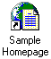

|
| ||
|
| ||
Robert Hess
Developer Relations Group
Updated: April 1996
Contents
Internet Shortcuts
Creating an Internet Shortcut
Interfacing with the Internet -- Easily
Your application can utilize Internet shortcuts to store and retrieve information on how to locate data resources on the Internet. As long as the user has a properly configured Internet connection and some form of browser, you can easily add support to your application for Internet resources. This is done in the form of Internet shortcuts. The best way to see how this is achieved is to first look at an example of an Internet shortcut.
An easy way to create an Internet shortcut is to select "Create Shortcut" from the FILE menu of Internet Explorer. This will create a shortcut file that is added to your desktop, and from there, you can drag/drop this icon into any directory folder that you might want to be working from. This is the same sort of file that is being used to save out information for your "Favorites". Let's say you created such a shortcut, and saved it out as "Sample Homepage.URL", the icon that would get saved out to your desktop would look similar to:

If you open up this file using a text editor, the data in this file will look similar to this:
[InternetShortcut] URL=http://sample.microsoft.com/samplepage.htmlNote that -- unlike some other shortcuts you might have tried looking at -- this is made up of simple text. To view the URL of an Internet shortcut directly from the shell, you can right-click on an Internet shortcut and bring up its property sheet. On the property sheet, you can click on the Internet Shortcut tab to view the associated URL information.
For the user, Internet shortcuts are easy to create. You created one yourself if you followed the above procedure. Another way to create one is to right-click on the desktop (or in an Explorer folder view), and point to New, then click Shortcut to invoke the shortcut creation wizard. If in the Command Line text box you enter a valid URL designator, an Internet shortcut will be created instead of a "shell" shortcut. A URL can begin with "http:" or you can use any prefix that is defined as a valid URL designator. For example, "www.microsoft.com" is seen as a URL because "www" is defined in the registry as a valid URL prefix.
To create a Internet shortcut programmatically, there are some special APIs supplied in URL.DLL. Below is some sample code that will create the example URL we illustrated above.
To create an Internet shortcut from a URL, use something like this sequence of API calls and methods (this comes from URL.HLP):
#define INC_OLE2 /* for windows.h */ #include <windows.h> #include <intshcut.h> /* for Internet Shortcut declarations */
CoCreateInstance(CLSID_InternetShortcut, ..., IID_IUniformResourceLocator, ...); IUniformResourceLocator::SetURL("http://sample.microsoft.com/samplepage.html",0); IUniformResourceLocator::QueryInterface(IID_IPersistFile, ...); IPersistFile::Save(L"Sample Homepage.url", ...); IPersistFile::SaveCompleted(L"Sample Homepage.url"); IPersistFile::Release();
IUniformResourceLocator::Release();
The flip side of creating an Internet shortcut is to use it. This is easily done via ShellExecute. Assuming you know the name of the file containing the Internet shortcut, this is easily done via code that looks similar to the following code. Please note that this is a slightly robust example; all of the work is being done by the single line of code below that is in bold:
hFind = FindFirstFile (szListText, &w32FileData);
if (hFind == INVALID_HANDLE_VALUE) {
//MessageBox (GetFocus(), "No Such File", szListText,0);
return FALSE;
}
GetFullPathName (szListText, sizeof(szFileBuf), szFileBuf, &pFileName);
sprintf (szListText,"""%s""", pFileName);
*pFileName = 0;
hApp = ShellExecute (GetDesktopWindow(), "open", szListText,
NULL, szFileBuf, SW_SHOW);
if (hApp < = (HANDLE)32) {
switch ((UINT)hApp) {
case 0:
MessageBox (GetFocus(),
"The system is out of memory or resources.",szListText, 0);
break;
case ERROR_FILE_NOT_FOUND:
MessageBox (GetFocus(),
"The specified file was not found.",szListText, 0);
break;
case ERROR_PATH_NOT_FOUND:
MessageBox (GetFocus(),
"The specified path was not found.",szListText, 0);
break;
case ERROR_BAD_FORMAT:
MessageBox (GetFocus(),
"The .EXE file is invalid.",szListText, 0);
break;
case SE_ERR_ASSOCINCOMPLETE:
MessageBox (GetFocus(),
"The filename association is incomplete or invalid.",
szListText, 0);
break;
case SE_ERR_DDEBUSY:
MessageBox (GetFocus(),
"DDE is busy, the transaction could not be completed.",
szListText, 0);
break;
case SE_ERR_DDEFAIL:
MessageBox (GetFocus(),
"The DDE transaction failed.",szListText, 0);
break;
case SE_ERR_DDETIMEOUT:
MessageBox (GetFocus(),
"DDE timed out, the transaction could not be completed.",
szListText, 0);
break;
case SE_ERR_NOASSOC:
MessageBox (GetFocus(),
"There is no application associated with that file.",
szListText, 0);
break;
case SE_ERR_SHARE:
MessageBox (GetFocus(),
"A sharing violation occurred.",szListText, 0);
break;
}
}
break;
One of the components that allows Windows® 95 to interact with the Internet is URL.DLL (it gets installed with the Windows 95 Plus! Pack). It supplies a number of functions for applications to use URLs, and also allows the Windows 95 Shell to interact with URLs directly. This means that in the Run dialog box (on the Start menu, click Run), you can type the name of a URL (such as "http://www.microsoft.com/") directly, and the system will automatically launch your default browser to view the specified Web page.
One of the benefits of having the shell now capable of resolving a URL is that it makes it extremely easy to leverage the Web in virtually any type of application you are writing. As long as you have the capability of telling the system to "open" a document or application, you can launch a Web page.
For example, consider the following C code using the WinExec function:
uError = WinExec ("start http://www.microsoft.com/", SW_SHOW);
And a version using ShellExecute:
hApp = ShellExecute (GetDesktopWindow(), "open", "http://www.microsoft.com/", NULL, NULL, SW_SHOW);
If you make that call in your application, it will launch Internet Explorer and go to the specified Web page.
Another useful example is for adding a hot link to a Web page in a WinHelp file. Here is code that I've used in some of the WinHelp files that I've authored:
{\uldb http://www.microsoft.com/workshop/prog
{\v !ExecFile(http://www.microsoft.com/workshop/prog)}}
And because URL.DLL understands the "mailto:" protocol identifier, you can use the same method for easily creating an e-mail link in your application, Microsoft Excel spreadsheet, or WinHelp file.
Did you find this material useful? Gripes? Compliments? Suggestions for other articles? Write us!
© 1999 Microsoft Corporation. All rights reserved. Terms of use.